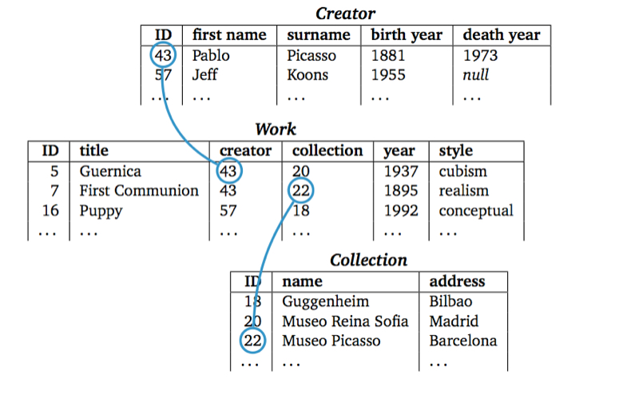
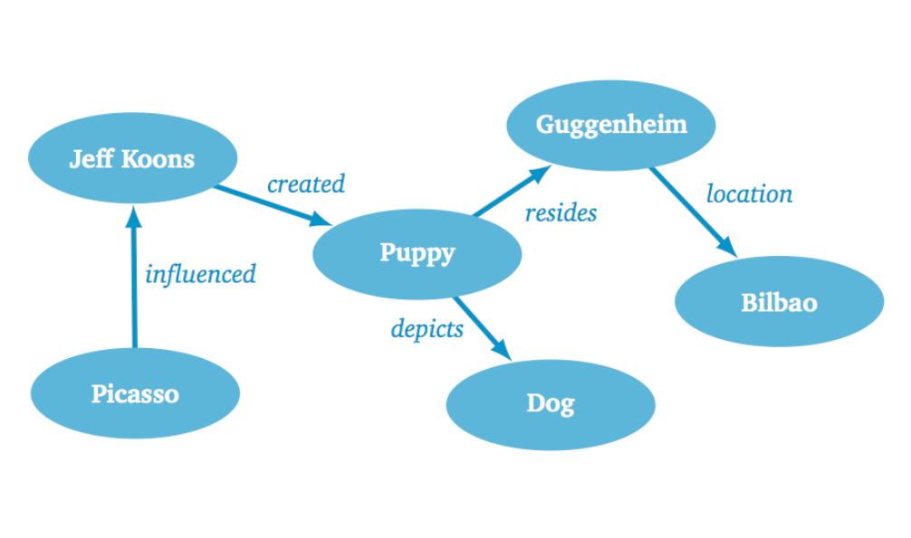
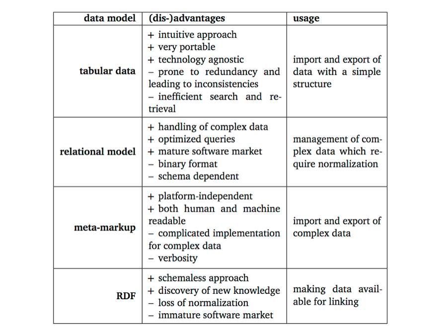

Navigation
Data Modeling
What world view does the model express ?
Implementation and serialization formats ?
How does the model address
Search and retrieval ?
Updates ?
Distribution ?
Models and Serialization Formats
tabular data CSV, TSV
relational model binary files
meta-markup languages SGML, XML
RDF Turtle, N-Triples, RDF-XML
First Model : Tabular Data
Intuitive approach to organize data
Represents a flat worldview, devoid of relations and hierarchy
Consists of columns and rows, their intersection gives meaning to the data
Tabular Data - Example
Title
Creator
Date
Collection
Guernica
Pablo Picasso
1937
Museo Reina Sofia
First Communion
Picasso
1895
Museo Picasso
Puppy
Koons, Jeff
1992
Guggenheim
Serializing Tabular Data
Common serialization formats for tabular data include CSV and TSV .
title,creator,date,collectionGuernica,Pablo Picasso,1937,Reina SofiaFirst Communion,Picasso,1895,Museo PicassoPuppy,"Koons, Jeff",1992,Guggenheim
Limits ?
Inconsistencies
Search and retrieval
Updates - change
Distribution
How do we overcome these issues with tabular data?
Second Model: Relational Model
Most successful model to manage structured data
Developed throughout the 1970s
Rare to find an information system which is not driven by a relational database
Mature technology which is here to stay
Mapping reality to a database
Worldview consisting of
Entities: group of information that varies independently from other groups
Attributes: describe properties of entities
Relationships: create connections in between entities
Designing a relational database
Identify the entity types (e.g. Work, Creator)
For every entity, create a table which will contain the properties of the entity
Establish the relationships in between the tables
Is sometimes more an art than a science !
Redesigning our catalog

©2014 Seth van Hooland and Ruben Verborgh
Note how the data which were packed together in one flat file are now represented in three distinct tables: Creator, Work and Collection.
Implementation
Relational Database Management System (RDBMS) software used to implement the model
Common RDBMS tools/software vendors are MySQL, Oracle, SQLServer
Other more complex software, such as Integrated Library Systems (ILS) or collection management systems, are build on top of a RDBMS
SQL
Structured Query Language
Used to insert, query, update and delete data, for schema creation and data access control
Standardized in theory (ISO/IEC 9075) but not so much in pratice
Creating a Table with SQL
CREATE TABLE Work (
id INT AUTO_INCREMENT PRIMARY KEY,
title VARCHAR(100),
creator INT,
collection INT,
year CHAR(4),
style VARCHAR(40),
);
Encoding data into a table with SQL
INSERT INTO Work (title, creator, collection, year, style)
VALUES ('Guernica',43, 20, 1937,'Cubism')
Please note that the values 43 and 20 refer to the primary keys from the tables Creator and
Collection.
Search and Retrieval
Relational model is extremely performant
End-users interact with a GUI but it can be useful to know some basic SQL queries
For example: find all the titles of the works by Picasso :
SELECT title FROM Work WHERE creator=43
Dealing with Change
Updating the schema of a database can be very complex
Apart from ensuring the normalization of the modified schema, the modifications
might also affect public front-ends
Informal and ad-hoc solutions often
are taken, which can have disastrous consequences over time
©2013 David Helbich
Using ductape to McGyver yourself out of a problem can be used as a methaphor for many
of the adhoc solutions found not to tamper with the schema of a database.
Sharing your Data
Database interoperabilty = search for the holy grail
Both data and the schema are locked up in a binary file,
coupled to a specific software
Leaving aside the technical issues of migrating and integrating
databases, the main complexity resides in the semantics :
a database schema is rarely well documented in practice
©2010 Mohamed Majid
Relational databases are the working horses of our information economy. However,
they tend to keep both the data and the schema hostage.
Markup
Origins in the typesetting world and the management of large volumes of non-structured data
Understand shift from make-up :<font size="20"><b>Introduction to Linked Data</b></font></code>
and markup :h1 {font-size: 20pt; font-weight: bold}...lt;h1>Introduction to Linked Data</h1>
©2014 Rainer Stropek
Worldview of markup can be expressed in the form of trees or russian puppets,
consisting of a root element, parents, children and siblings.
HTML detour
1989: Tim Berners-Lee was inspired by SGML but simplified it by proposing a fixed set
of tags to represent the structural components of a Web page (e.g.<head>, >body<
Internet bubble + browser war in the late 1990s => markup was corrupted into makeup
SGML became like those backwoods blues players of old
to whom the pop stars gave honor but no money.
Bob Boiko
©2004 Eric Clapton
Bob Boiko compared the relationship between SGML and HTML by using the metaphore
of Eric Clapton and Robert Johnson : Johnson did all the hard work to define the blues genre,
while Clapton reaped commercial success with an easy-lisening version of Johnson's work.
SGML was difficult to use and hardly a success story, but it defined
many of the conceptual building blocks of the Web. HTML reused some of its concepts in a radically
simplified manner, and resulted in the success story we all know.
XML
XML 1.0 : W3C recommendation in 1998
Effort was made to maintain 80% of SGML's functionality
with only 20% of its complexity
Big impact: open standard which is platform and application independent
Modeling XML
Structure documents with
elements: serialized as tags surrounded by angle brackets
attribute: key/value modifiers of a tag
Each document starts with a declaration:
<?xml version="1.0" encoding="UTF-8"?><Art title="Modern art"/>
Let's add a work to our XML catalog of art objects !
Notice how we can model all of the metadata as attributes :
<?xml version="1.0" encoding="UTF-8"?><Art title="Modern art"/><Work title="Guernica" year="1937" creator="Pablo Picasso"collection="Reina Sofia" location="Madrid"/></Art>
The hierarchical structure of XML now becomes apparent:
the Work element is a child of the Art element. However,
note how we've choosen to model the metadata of works as attributes. Is this a wise option ?
Let's model everything as child elements !
<Art title="Modern art"/>
<Work>
<Title>Guernica</Title>
<CreationDate><Year>1937</Year></CreationDate>
<Creator>
<FirstName>Pablo</FirstName>
<LastName>Picasso</LastName>
</Creator>
<Collection>
<Name>Reina Sofia</Name>
<Location>Madrid</Location>
</Collection>
</Work>
</Art>This leaves maximum flexibility to extend the document at any point.
However, this also comes at a cost: the hierarchy is now relatively deep to express simple concepts,
even for straightforward properties such as the year of creation.
Let's go for a compromise !
<Art title="Modern art"/><Work title="Guernica" year="1937"><Creator firstName="Pablo" lastName="Picasso"/><Collection name="Reina Sofia" location="Madrid"/></Work></Art>
In this example we've choosen to model all values that will not be decomposed
or require further properties as attributes. For instance, a work's title
does not require further description, but we could add additional information to creator,
such as a date and place of birth.
Schema's
Different languages exist to express schema's (DTD, RELAX NG)
but XML Schema (XSD) is the most popular
Example for our catalog:
<xsd:element name="Work"/><xsd:complexType><xsd:sequence><xsd:element name="CreatorRef" maxOccurs="unbounded"/><xsd:attribute name="title" type="xsd:string"/>
<attribute name="year" type="xsd:gYear"/><attribute name="collectionId" type="xsd:IDREF"/></xsd:complexType></xsd:element>
Namespaces
Mechanism to disambiguate the meaning of elements and attributes across schemas
Namespaces are indicated with the help of the reserved XML attribute xmlns:
<Art title="Modern art"xmlns:dc="http://purl.org/dc/terms/"xmlns:vra="http://www.vraweb.org/vracore4.htm"<Work><dc:creator>Pablo Picasso</dc:creator>
<dc:title>Guernica</dc:title><vra:technique>Oil painting</vra:technique></Work></Art>
Search and retrieval
XML has its own query language : XPATH
Allows to traverse XML trees and collect element and attribute values
Examples:
/Art/Work/CreatorCreator/LastNameWork/descendent::LastNameWork/@year
When to use a database or XML ?
The quick answer is: it depends on the context
In reality, people often rely on the tools and methods they are acquinted with
The big XML hype is over, mainly due to the prohibitive time needed for the encoding
Limits ?
Inconsistencies
Search and retrieval
Updates - change
Distribution
Fourth model : RDF
Resource Description Framework (RDF)
Worldview consisting of a gigantic ever-expanding graph of triples
Triple consists of a subject, object and predicate
Any resource (the subject) can have a relationship (the predicate) to any other resource (the object)

©2014 Seth van Hooland and Ruben Verborgh
Our art catalog represented in RDF triples. Notice how easy it is to integrate information and
create links in between resources. Picasso influenced Jeff Koons, about which we also have some metadata.
Model
Through a radically simplified data model, the semantics are made explicit by the triple itself
Both databases and XML are based on the principle that only data conform to a locally defined schema
may exist => closed world assumption
RDF sails under the AAA (Anyone can say Anything about Anything) flag
Serialization
RDF/XML
Developed in 2001 at the beginning of the XML omnipresence
Now considered to be too verbose and hard to parse
Turtle
Allows to express RDF triples in a compact and natural text form
Each of the components (subject, predicate, object) are separated by whitespace and a triple
ends with a dot
Turtle example
@prefix gh:<http://www.guggenheim.org/new-york/collections/collection-online/artwork/>.@prefix dc:<http://purl.org/dc/terms/>.@prefix viaf:<http://viaf.org/viaf/>.gh:48 dc:creator viaf:5035739
Let's continue with our Turtle example
Multiple statements about the same object can be written
tersely by using a semicolon if the subject is repeated, and a comma
if the subject and predicate are repeated
gh:48 dc:creator viaf:5035739;dc:title "Puppy".viaf:5035739 :influencedBy viaf:15873,viaf:95794725.
Let's continue with our Turtle example
RDF includes literal values ("Puppy") in its model as well, as some properties
eventually do not point at another object but rather at a non-decomposable value
:influencedBy has an empty namespace prefix, which indicates that it
is locally defined :
gh:48 dc:creator viaf:5035739;dc:title "Puppy".viaf:5035739 :influencedBy viaf:15873,viaf:95794725.
Search and retrieval in RDF
SPARQL: recursive acronym for SPARQL Protocol and RDF Query Language
Example: let's retrieve all triples which have Picasso as the subject:
SELECT ?predicate ?object WHERE {<http://dpbedia.org/resource/Pablo_Picasso>?predicate ?object.}
Limits of RDF ?
Inconsistencies
Search and retrieval
Updates - change
Distribution

©2014 Seth van Hooland and Ruben Verborgh
This module explained the differences between the different models. Depending on the
context and what you need, we hope you now understand when to opt for which type of model.
©1915 Jewish Historical Society
Don't be the boy with the hammer! Once people develop experience with one tool and model,
they tend to use it for everything. For example, it takes some time to develop skills to master the XML
suite (XSD, XPATH, XQUERY, etc) so after a while people squeze everything into hierarchical trees
to be processed as XML, even if it's not a natural fit.
 Except where otherwise noted, the content of these slides is licensed under a Creative Commons Attribution 4.0 International License.
Except where otherwise noted, the content of these slides is licensed under a Creative Commons Attribution 4.0 International License.